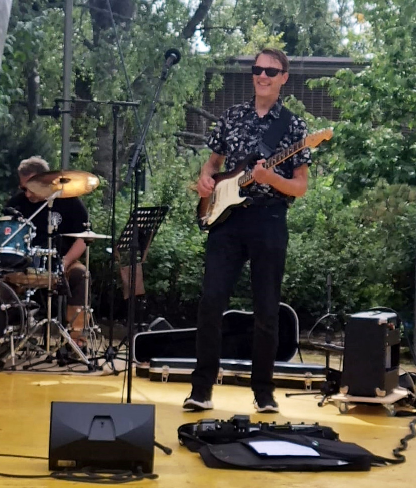

One memory still sends shivers down my spine: listening to Ernesto Lecuona's music in my dad's car, feeling completely swept away. That emotional connection is what I strive to create in my own music, both solo and through collaborations.
Since the 90s, I've honed my live performance skills by rocking and bluesing my way through various bands. My home studio, however, is where my creative heart truly shines. My latest albums, "Into The Light" and "Songs from My Lonely Heart," are a testament to this, offering a taste of melodic AOR pop and rock influenced by my favorite artists like Toto, Bryan Adams, Mike and the Mechanics and Richard Marx. Of course, Van Halen, Whitesnake, Deep Purple, Rainbow also got me rocking away on guitar and are always somehow present in my music.
But my musical explorations extend beyond these genres. I delve into the therapeutic side of music as well, composing soundscapes for "40 Cycles Soundscapes" and "Vibrations." Notably, "Vibrations" has become a useful tool among Finnish music therapists.
Throughout my career, I've worn many hats musician, technician, and producer contributing to numerous projects beyond my solo endeavors. I dig playing in bands and life without one feels empty!
I want to tell you about a job I had for two years in Helsinki in the 90s. I worked as a house sound and light technician in a classy jazz club. Every evening was different, featuring a variety of professionals from Finland and abroad. The names that stuck in my memory include Trio Töykeät, Janne Schaffer, Jussi Raittinen, Oiling Boiling Band, and some American big band (Ellington heritage?) that performed in a nerve-wracking live radio show. I really learned the hard way how to serve pros as 'the sound guy.' It was one of my best jobs ever.
During the years, I have gathered many promising song ideas which should make to new albums in my opinion. I have started to work on these already and soon you can hear my new stuff!
I have also new ideas how to write songs. I want to break free from the old song forms and try different instrumentations. This might get together in new weird albums sometime in the future.
My two new albums are on their way! I am planning to release "Made from love" in summer 2025 and "Light as light" some time in 2026.
By the way, I am NOT the Swedish metal singer who bears the same name ;)
- Matti "Masa" Kärki
{kind=link}